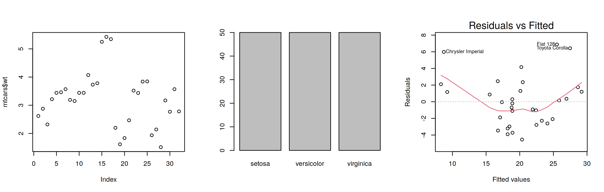
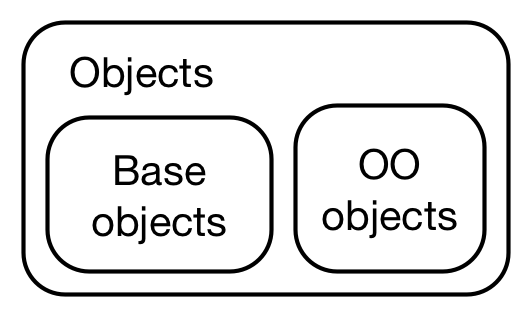
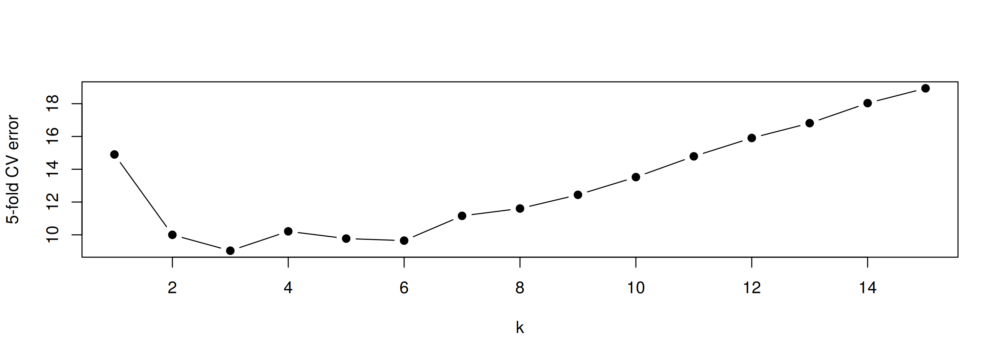
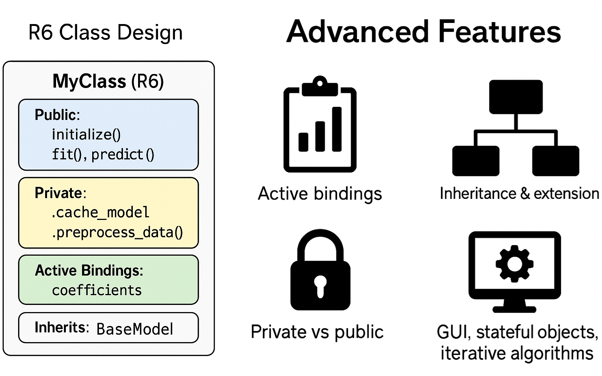

fit <- lm(mpg ~ wt, data = mtcars)
par(mfrow = c(1, 3))
plot(mtcars$wt) # a numeric vector -> scatterplot of values
plot(iris$Species) # a factor -> barplot
plot(fit, which = 1) # an lm object -> residual plotObject-Oriented Programming in R 🧱
MATH 4750 / MSSC 5750 Computational Statistics
Dr. Mehdi Maadooliat
Marquette University
MATH 4750 - Spring 2027
Object-Oriented Programming in R
OOP paradigms in R: functional vs. encapsulated
Base types and the S3 system
S4: formal classes
R6: reference semantics
S7 and best practices
Why OOP in a Statistics Course?

- Same function, different behavior depending on the class of the argument: polymorphism.
print(),summary(),plot(),predict()work onlm,glm,boot,density,hclust, … objects.- When you write a new method (an estimator, a resampling procedure), giving it a class lets users use these familiar generics.
Two Paradigms
Functional OOP (S3, S4, S7)
- Methods belong to generic functions
- Call:
generic(object, ...), e.g.summary(fit) - Objects are (mostly) immutable: copy-on-modify
Encapsulated OOP (R6, Reference Classes)
- Methods belong to objects
- Call:
object$method(...), e.g.learner$train(task) - Objects are mutable: modified in place

Base Types vs. OO Objects
Everything in R is an object, but not every object is object-oriented.
[1] FALSE TRUE[1] "integer"$levels
[1] "a" "b" "c"
$class
[1] "factor"[1] 1 2 3
attr(,"levels")
[1] "a" "b" "c"- Every object has a base type (
typeof()):"double","integer","character","list","closure","environment", … - An OO object has a
classattribute.
S3: Informal Classes
S3 Basics
- Lightweight: no formal definition; an S3 object is a base type with a
classattribute.
[1] TRUE- Danger: nothing stops you from doing nonsense:
Constructor, Validator, Helper
- Low-level constructor
new_myclass(): assumes inputs are OK; creates the structure efficiently. - Validator
validate_myclass(): more expensive checks of the values. - User-facing helper
myclass(): coerces/checks inputs, then builds + validates.
new_knnreg <- function(x = matrix(numeric()), y = numeric(), k = 1L) {
stopifnot(is.matrix(x), is.numeric(y), is.integer(k))
structure(list(x = x, y = y, k = k, center = colMeans(x), scale = apply(x, 2, sd)),
class = "knnreg")
}
validate_knnreg <- function(obj) {
if (nrow(obj$x) != length(obj$y)) stop("`x` and `y` must have the same number of observations", call. = FALSE)
if (obj$k < 1 || obj$k > nrow(obj$x)) stop("`k` must be between 1 and n", call. = FALSE)
if (anyNA(obj$x) || anyNA(obj$y)) stop("missing values are not allowed", call. = FALSE)
obj
}
knnreg <- function(x, y, k = 5) {
validate_knnreg(new_knnreg(as.matrix(x), as.numeric(y), as.integer(k)))
}Generics and Method Dispatch
- A generic calls
UseMethod(), which looks forgeneric.class, thengeneric.default:
function (x, ...)
UseMethod("print")
<bytecode: 0x55d94c3ce170>
<environment: namespace:base>function (object, ...)
UseMethod("predict")
<bytecode: 0x55d94a2c5bf0>
<environment: namespace:stats>print(x)withclass(x) = c("ordered", "factor")triesprint.ordered\(\rightarrow\)print.factor\(\rightarrow\)print.default.
Creating Methods for knnreg
print.knnreg <- function(x, ...) {
cat("k-NN regression with k =", x$k, "\n")
cat("n =", nrow(x$x), "observations, p =", ncol(x$x), "predictors\n")
invisible(x)
}
predict.knnreg <- function(object, newdata = object$x, k = object$k, ...) {
tr <- scale(object$x, object$center, object$scale)
te <- scale(as.matrix(newdata), object$center, object$scale)
apply(te, 1, function(x0) mean(object$y[order(colSums((t(tr) - x0)^2))[1:k]]))
}
fit <- knnreg(mtcars[, c("wt", "qsec")], mtcars$mpg, k = 5)
fitk-NN regression with k = 5
n = 32 observations, p = 2 predictors[1] 27.58 17.18Error : `k` must be between 1 and nA New Generic
cv_error <- function(object, ...) UseMethod("cv_error") # the generic
cv_error.knnreg <- function(object, ks = 1:15, folds = 5, ...) {
n <- nrow(object$x); fold <- sample(rep(1:folds, length.out = n))
sapply(ks, function(k) mean(sapply(1:folds, function(f) {
sub <- knnreg(object$x[fold != f, , drop = FALSE], object$y[fold != f], k)
mean((object$y[fold == f] - predict(sub, object$x[fold == f, , drop = FALSE]))^2)
})))
}
set.seed(4750)
plot(1:15, cv_error(fit), type = "b", pch = 19, xlab = "k", ylab = "5-fold CV error")
Inheritance and NextMethod()
# a weighted version: closer neighbors get larger weights
wknnreg <- function(x, y, k = 5) {
obj <- knnreg(x, y, k)
class(obj) <- c("wknnreg", class(obj)) # subclass first
obj
}
print.wknnreg <- function(x, ...) {
cat("(distance-weighted) ")
NextMethod() # then call print.knnreg
}
wfit <- wknnreg(mtcars[, c("wt", "qsec")], mtcars$mpg, k = 5)
class(wfit)[1] "wknnreg" "knnreg" (distance-weighted) k-NN regression with k = 5
n = 32 observations, p = 2 predictorsWe did not write predict.wknnreg(). Which method will predict(wfit, ...) use? Write the weighted version.
S3 for Things You Already Use
[1] coerce initialize plot print show slotsFromS3
see '?methods' for accessing help and source code[1] "density"[1] "x" "y" "bw" "n" "call" "data.name"
[7] "has.na" boot()(Ch 8),density()(Ch 12),hclust()(clustering),optim()(Ch 14) all return objects with methods; reading the method source is the best way to learn what they compute:getS3method("print", "density").
S4: Formal Classes
S4: Classes with Slots
setClass("KNNReg",
slots = c(x = "matrix", y = "numeric", k = "integer"),
validity = function(object) {
if (nrow(object@x) != length(object@y)) return("x and y have different numbers of rows")
if (object@k < 1L) return("k must be positive")
TRUE
})
m4 <- new("KNNReg", x = as.matrix(mtcars[, c("wt", "qsec")]), y = mtcars$mpg, k = 5L)
m4@k # slot access via @[1] 5[1] 5[1] FALSEError in validObject(.Object) :
invalid class "KNNReg" object: x and y have different numbers of rowsS4 Generics and Methods
[1] "fitted_knn"<KNNReg> k = 5 n = 32 Mazda RX4 Mazda RX4 Wag Datsun 710 Hornet 4 Drive
21.28 18.28 26.86 20.62
Hornet Sportabout Valiant
17.18 20.64 S4 Inheritance and Multiple Dispatch
[1] TRUE<KNNReg> k = 5 n = 32 [1] "combine"[1] "model + number" "number + model"- S4 is used heavily in Bioconductor and in
Matrix,lme4, …
R6: Reference Semantics
R6 Classes
Reference Semantics: Objects Are Not Copied
y1 y2
10 10 y1 y3
15 10 - Contrast with S3/S4 where
y2 <- y1; modify(y1)leavesy2unchanged.
An R6 Online Learner
RunningMoments <- R6Class("RunningMoments",
public = list(
initialize = function() invisible(self),
update = function(x) { # Welford's algorithm (Ch 13: numerically stable)
for (xi in x) {
private$n <- private$n + 1
delta <- xi - private$mu
private$mu <- private$mu + delta / private$n
private$m2 <- private$m2 + delta * (xi - private$mu)
}
invisible(self)
},
print = function(...) cat("n =", private$n, " mean =", private$mu, " var =", self$var, "\n")
),
private = list(n = 0, mu = 0, m2 = 0),
active = list(var = function() private$m2 / (private$n - 1))
)
set.seed(4750); rm1 <- RunningMoments$new()
rm1$update(rnorm(1000))$update(rnorm(1000, 1)); rm1n = 2000 mean = 0.5018 var = 1.254 R6 Features
public,private, andactivefieldsinitialize()constructor,print()method- Inheritance:
R6Class("Child", inherit = Parent),super$method() clone(deep = TRUE)- Used by
shiny(sessions),mlr3,torch,httr2

S7: The New OOP System
- Designed by the R Consortium to unify S3 + S4 and fix their issues: formal properties, validation, multiple dispatch, S3/S4 compatibility.
Trade-offs and Best Practices
| Paradigm | Pros | Cons |
|---|---|---|
| S3 | Simple, flexible, ubiquitous | No schema, fragile dispatch |
| S4 | Formal, robust, multiple dispatch | Verbose, steeper learning curve |
| R6 | Encapsulated, mutable, fast | Not idiomatic for most stats objects |
| S7 | Unified, type-safe | Newer, evolving ecosystem |
- For a statistical method: S3 with constructor/validator/helper +
print,summary,predict,plotmethods. - Use R6 when state must change in place (simulations, online algorithms, apps).
- Document constructors and methods; write unit tests (next lecture: R packages).
Write an S3 class mcint returned by mc_integrate(g, a, b, m) (Ch 6) with print (estimate and SE) and plot (running mean with \(\pm 2\) SE bands) methods.